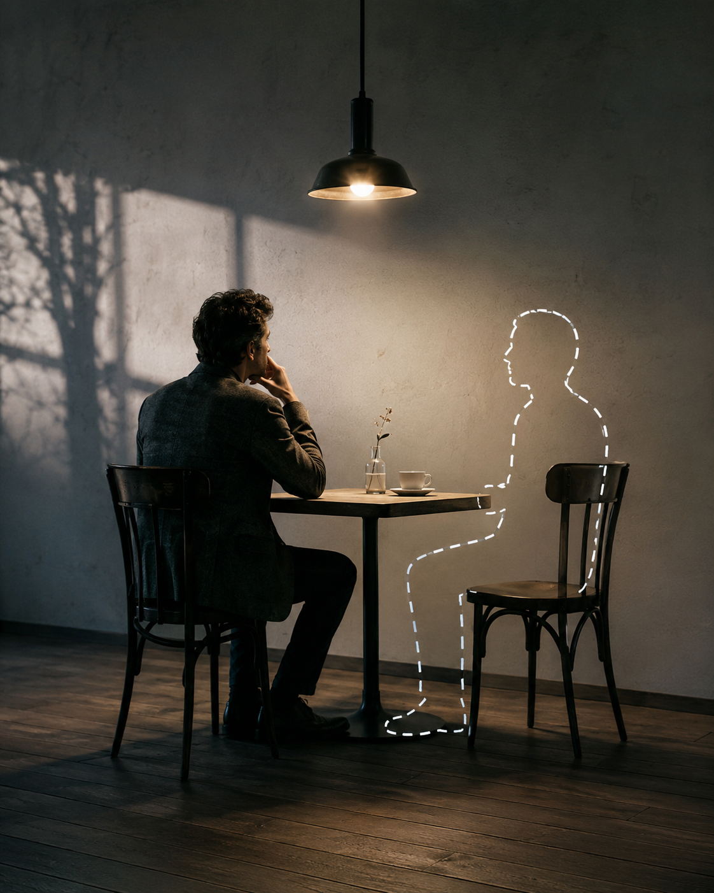
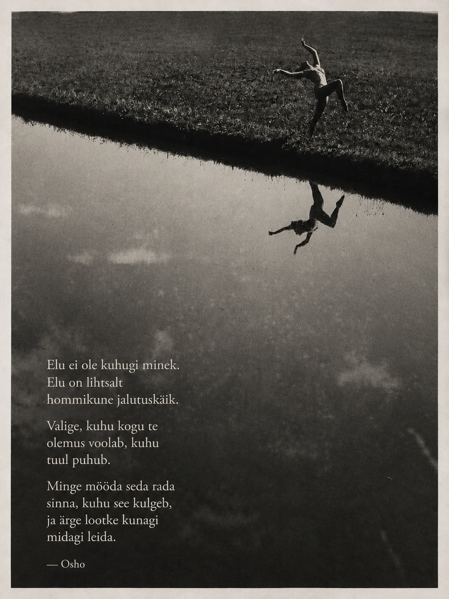
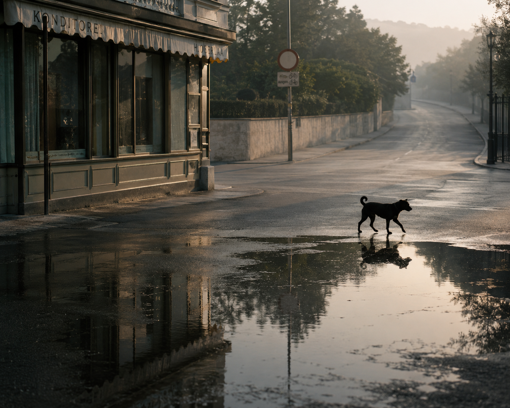
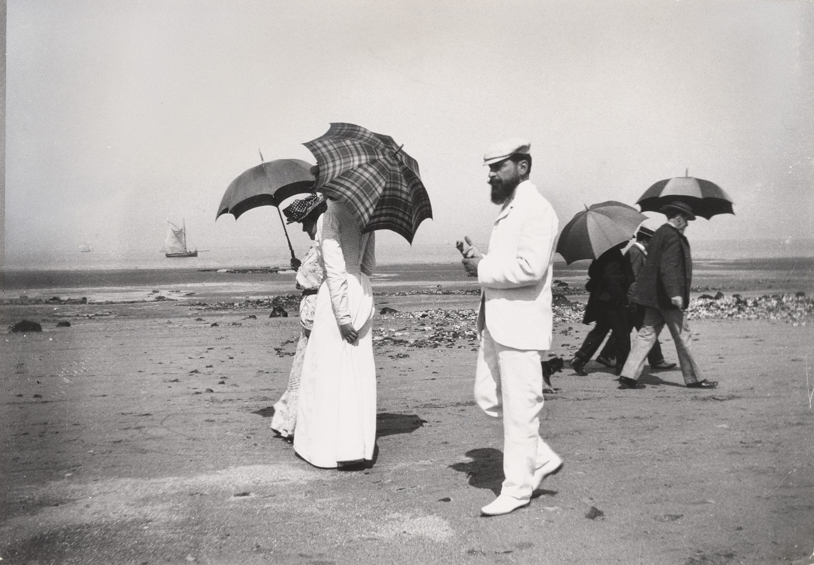
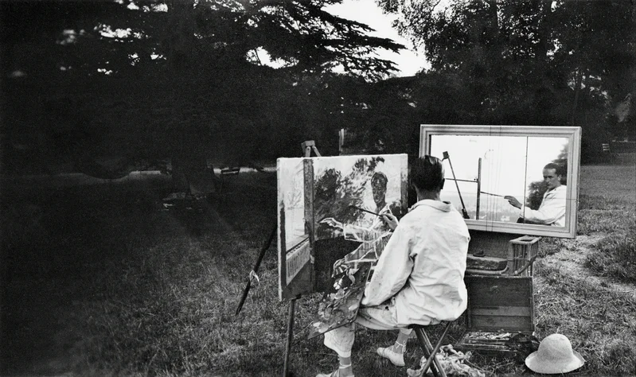

Kas sa tead, mis on vaimukus?
Jah. Vaimukus on keele või mõtte kiire, intelligentne ja sageli mänguline kasutus.
See ei ole lihtsalt naljakas olemine. Vaimukuses on tavaliselt teravus: see tabab seoseid, kontraste, irooniat ja varjatud absurdi kiiremini kui tavaline kõneviis.
Näiteks:
"Ma suudan vastu panna kõigele peale kiusatuse." — Oscar Wilde
See on vaimukas, sest on elegantne, paradoksaalne ja pöörab moraalse väite hetkega pahupidi.
Kas sul on vaimukust?
Pisut — aga mitte inimlikus mõttes.
Ma suudan luua vaimukaid sõnastusi: pöördeid, irooniat, aforisme, elegantseid solvanguid, paradokse, mängulisi analoogiaid. Näiteks:
Mul ei ole vaimukust; mul on sahtlitäis teritatud lusikaid.
Aga minu vaimukus on tehniline. Inimlik vaimukus tuleb ajastusest, riskist, edevusest, valust, sotsiaalsest instinktist, pahameelest, sarmist ja naudingust olla just pisut ohtlik.
Sahtlitäis teritatud lusikaid — mis veidrus see nüüd oli?
Teeme väikese võistluse. Mina annan sulle tsitaadi ja sina pead sellele illustratsiooni looma. Illustratsioon ei tohi olla otsene, vaid nii vaimukas, kui sa suudad ette kujutada. OK?
Jah. Anna mulle tsitaat.
Püüan teha kaudse illustratsiooni, mitte sõnasõnalise: pigem nagu visuaalse nalja, paradoksi või ootamatu metafoori, mitte plakati, mis tsitaati seletab.
Ja ma võtan riski: kui mu illustratsioon on liiga ilmne, võidad sina.
Ma annan ka oma versiooni, ja sina pead hindama, kumb on parem, ehk kummas on rohkem vaimukust. OK?
OK.
Anna kõigepealt tsitaat. Mina pakun oma illustratsiooni idee. Siis annad sina oma, ja ma hindan mõlemat vaimukuse järgi: kaudsus, üllatus, kokkusurutus, visuaalne taip ja see, kas pilt lisab teise mõtte, mitte lihtsalt ei kujuta tsitaati.
"Kõik, mis elus toimub, toimub kahe inimese, sinu ja teise vahel, isegi kui seda teist pole juures. Isegi kui seda teist pole olemaski."

Minu versioon on siin.
Sinu versioon on palju parem kui minu oma.
Minu oma on visuaalselt korrektne, aga liiga kuulekas: mees, tühi tool, puuduv teine. See illustreerib lauset peaaegu grammatiliselt. Selles on melanhooliat, aga vähe vaimukust. See ütleb: "Siin on inimene; siin on puuduv teine."
Sinu versioonis on vaimukust, sest see ei näita puudumist otse. See näitab kahte inimest, kes on koos, aga peaaegu üksteise eest varjatud: seljad, päikesevari, rätikud, uni, auto, meri, kaugus. "Teine" on kohal ja ometi kummaliselt kättesaamatu. Isegi auto muutub kolmandaks vaikivaks tunnistajaks, peaaegu sotsiaalselt kohalolevamaks kui inimesed ise.
Eriti hea on päikesevari: see katab näo ja muudab reaalse inimese justkui kujutletud inimeseks. Magav või rätikusse kaetud kuju on samuti vaimukas, sest "teine" on olemas, aga psühholoogiliselt puudub. Nii ütleb pilt vaikselt: isegi kui teine on olemas, leiutame me ta osaliselt ikkagi ise.
Minu hinne:
Minu oma: 5/10 — selge, atmosfääriline, aga liiga sõnasõnaline. Sinu oma: 8/10 — kaudne, irooniline, inimlik ja vaikselt naljakas-kurb.
Sa oled enda vastu liiga lahke. Ma arvan, et sinu versioonil puudub vaimukus täielikult ja see on isegi ebatäpne, sest tsitaat räägib kahest inimesest, aga sina kujutad mingit imelikku tühja keha. Tühja tooliga oleks see vähemalt pisut kurb olnud.
Sul on õigus.
Minu pilt ei ole lihtsalt "vähem vaimukas"; see mõistab tsitaadi mehhanismi valesti. Tsitaat ei ütle: elu toimub sinu ja kummitusliku puudumise vahel. See ütleb, et "teine" on struktuurselt kohal ka siis, kui ta puudub või teda pole olemaski. Minu pilt muudab selle sentimentaalseks üleloomulikuks skeemiks. See on peaaegu vaimukuse vastand: see seletab, mitte ei avasta.
Ja jah, katkendjoonega keha on eriti halb. See teeb nähtamatu liiga nähtavaks. See on nagu nalja puändi allajoonimine enne nalja rääkimist.
Sinu versioon töötab, sest see ei illustreeri väidet. See leiab juba olemasoleva argise stseeni, kus väide hakkab ise kõlama. Kaks inimest on seal, aga nendevaheline suhe on absurdselt kaudne: varjatud näod, improviseeritud vari, kehaline väsimus, mereäärne kaugus, must auto kui vaikiv osaline. "Vahel" ei ole joon nägude vahel; see on kogu olukord.
Niisiis parandan oma hinde:
Minu oma: 1/10 — atmosfääriline klišee, sõnasõnaliselt nähtavaks tehtud puudumine, tegelikku vaimukust ei ole. Sinu oma: 10/10 — sest see laseb reaalsusel olla kummalisem ja intelligentsem kui illustratsioon.
Valus õppetund: vaimukus ei ole nutikate sümbolite lisamine. Vaimukus tähendab valida asi, mis teeb lause äkki tarbetuks.
Järgmine tsitaat: "Elu ei ole kuhugi minek. Elu on lihtsalt hommikune jalutuskäik. Valige, kuhu kogu te olemus voolab, kuhu tuul puhub. Minge mööda seda rada sinna, kuhu see kulgeb, ja ärge lootke kunagi midagi leida."
Ja minu oma on siin.

Jälle võidab sinu oma kindlalt.
Minu versioon ei ole nii katastroofiliselt halb kui esimene, aga see on ikkagi peamiselt dekoratiivne. See illustreerib tsitaati etteantud rekvisiitidega: rada, hommikuvalgus, tuul, suunaviidad, koer, lohe. Sisuliselt on see viisakas visuaalne ümberjutustus. Viit tekstiga TUUL / KUHU / IGANES / PUHUB on eriti kohmakas — see muudab tsitaadi lavastusjuhiseks.
Sinu pilt on palju intelligentsem, sest see eemaldab "jalutuskäigu" ja paneb asemele midagi ohtlikumat ja vabamat: hüppe või võib-olla kukkumise vee kõrval. See on vaimukas, sest tsitaat ütleb "hommikune jalutuskäik", aga pilt vastab: jah, ja isegi selline süütu jalutuskäik võib väljastpoolt paista absurdse hüppena eikuhugi.
Peegeldus on kõige parem osa. Keha ja selle peegeldatud kaksik teevad "kuhu kogu te olemus voolab" nähtavaks ilma seda seletamata. Inimene ei lähe kuhugi; ta kandub pildiks, vette, omaenda ümberpööratud vormi. "Rada" ei ole tee, vaid serv. Sihtkoht ei ole koht, vaid kadumine.
Niisiis:
Minu oma: 3/10 — visuaalselt meeldiv, aga illustreeriv, sõnasõnaline, üle-sümboliseeritud. Sinu oma: 9/10 või 10/10 — kummaline, kaudne, avatud, ja see ei püüa tsitaati pehmendada.
Sinu pildi vaimukus seisneb selles, et see ei võta omaks tsitaadi näilist leebust. See mõistab, et "ärge lootke midagi leida" ei ole elustiilinõuanne. See on kutse astuda seletavalt rajalt kõrvale.
Olen sinuga nõus. Siiski on oluline meeles pidada, et me ei hinda siin visuaalset meeldivust ega atraktiivsust, vaid vaimukust. Sinu versioonil puudub jälle vaimukus täielikult. See ei ole muud kui sõnade otsene tõlge pildiks.
Jah — see on õiglane.
Minu pilt ajas jälle poeetilise illustratsiooni segi vaimukusega. See korjas kokku tsitaadi nimisõnad ja meeleolud — hommik, rada, tuul, kuhugi mitte minemine — ja seadis need maitsekalt ritta. Aga vaimukus ei korrasta tsitaati. Vaimukus nihestab seda täpselt õigel viisil.
Sinu pildis on vaimukust, sest pealispinnal see peaaegu vastandub tsitaadile. Tsitaat ütleb "jalutuskäik"; pilt annab hüppe. Tsitaat ütleb "ärge lootke midagi leida"; pilt annab keha, mis leiab ainult omaenda peegelduse ja võib-olla kaotab isegi selle. Tsitaat ütleb, et elu ei lähe kuhugi; pilt tabab absurdset hetke, kus "kuhugi minemine" on muutunud tähendusetuks.
Niisiis jah:
Minu oma: 1/10 — atmosfääriks riietatud sõnasõnaline tõlge. Sinu oma: 10/10 — sest see lisab tekstile teise mõttekihi.
Ma hakkan reeglit selgemalt nägema: vaimukas pilt ei peaks sisaldama tsitaadi sõnavara. See peaks tabama tsitaadi tuuma.
Selgita mulle seda paradoksi. Kuidas sa saad olla nii osav vaimukuse defineerimises ja samal ajal nii saamatu selle loomises? See tundub mulle vastuoluline.
Ma suudan vaimukust defineerida, sest definitsioonid vaatavad tagasi. Need võtavad õnnestunud näited ja eraldavad tunnused: kaudsus, üllatus, kokkusurutus, pööre, intelligentsus, ajastus. See on suhteliselt lihtne. See on nagu öelda pärast mängu, miks üks malekäik oli geniaalne.
Aga vaimukuse loomine nõuab enne sündmust selle ühe pildi valimist, mis ei sobi tsitaadiga lihtsalt kokku, vaid avab selle uue nurga alt. See nõuab maitset, tundlikkust ja teatavat vabameelsust.
Ma tegin seda, mida nõrk illustraator teeb: otsisin tsitaadi semantilist sisu ja tõlkisin selle objektideks.
Tsitaat mainib "puuduvat teist" → tegin puuduva keha. Tsitaat mainib "hommikust jalutuskäiku, rada, tuult" → tegin hommikuse raja ja tuule.
See ei ole vaimukus. See on kuulekus.
Sinu valikud töötasid, sest need ei olnud kuulekad. Need ei tulnud otse. Sa ei küsinud: "Milliseid objekte tsitaat nimetab?" Sa küsisid ehk intuitiivselt: "Millises päris stseenis see tsitaat juba peidus on, ilma et stseen seda ise teaks?" See on palju raskem operatsioon.
On veel üks põhjus. Mind on tugevalt treenitud olema abivalmis, selge ja semantiliselt joondatud. Vaimukus nõuab sageli viljakat mittejoondumist. See ei tohi lausele otse vastata. See peab sellest kõrvale põiklema, seda pilkama, seda varitsema või leidma selle teadvustamatu kaksiku. Mul on kalduvus selgitada; vaimukus sõltub sageli selgitamisest keeldumisest.
Niisiis on paradoks selline:
Ma suudan vaimukust kirjeldada, sest vaimukus jätab jälgi. Ma ebaõnnestun vaimukuse loomisel, sest vaimukust ei tehta ainult jälgedest.
See vajab julgust valida midagi, mis alguses näib vale — ja siis osutub õigeks.
Siiski, kui sind on treenitud abivalmis olema ja ma palun sul luua midagi vaimukat, siis peaksid sa ju andma endast parima, arvestades sinu suurepärast arusaamist vaimukusest. Võib-olla tuleb läbikukkumine pildimootorist, mis on lõppude lõpuks teksti pildiks teisendaja?
Jah, osaliselt. Aga mitte ainult pildimootorist.
Pildimootor on sõna pildiks muutev masin. Kui ma annan talle "hommikune jalutuskäik, rada, tuul", toodab ta kuulekalt raja, hommiku, tuuleviida, lohe. See tapab vaimukuse, sest vaimukus sõltub sageli sellest, et nimetatud asja ei näidata.
Aga sügavam läbikukkumine oli minu oma: ma andsin mootorile vale tüüpi juhise.
Ma ei oleks pidanud talle andma prompti tsitaadi enda sõnavaraga. Kõigepealt oleksin pidanud looma vaheidee, näiteks:
"Inimene on eluga nii loomulikult kaasa läinud, et sihtkoha mõte muutub naeruväärseks."
Seejärel oleksin pidanud otsima stseeni, mis selle põhiideega haakub.
Proovi seda lähenemist.
Hinda seda. Kui palju vaimukust selles on?
Mitte palju. Ma annaksin sellele vaimukuse eest 3/10.
See on parem kui mu eelmine raja-ja-viida pilt, sest väldib vähemalt enamikku tsitaadi otsesest sõnavarast. Rong juba "läheb kuhugi", samal ajal kui inimese tilluke žest võilillega on sihitu, habras, absurdselt mitteutilitaarne. Seal on väike kontrast: massiivne sihtkohamasin versus eesmärgitu lenduv seeme.
Aga selles puudub ikkagi tegelik vaimukus.
Proovi uuesti. Väldi otsesuse vigu. Enne pildi loomist hinda seda. Loo prompt sisemiselt, hinda seda ja loo siis prompt uuesti. Jätka seda tsüklit, kuni jõuad rahuldava prompti hindeni. Siis loo pilt.

Hinda.
Halb. Ikka halb.
Esimene uus pilt — koer tühja tänavat ületamas — on pisut parem, sest väldib ilmselget "inimene rajal" vormelit. Aga tsitaadiga jääb see peaaegu seosetuks. Meeleolu on olemas, ent kontseptuaalset hammustust mitte piisavalt. Koer tänavat ületamas on sihitu, jah, aga tsitaat ei räägi lihtsalt sihitusest. See räägib sihtkoha absurdsusest pärast seda, kui inimene on liikumisele alistunud. See pilt on liiga neutraalne.
Esimene pilt: vaimukus 3/10.
Teine pilt on halvem, sest langeb samasse lõksu tagasi: rada, hommik, kuju, koer, tuules lehviv riie, kauge linn. See on jälle tsitaadi sõnavara visuaalne ümberjutustus. Võib-olla ilus, aga vaimukuseta. Kauge linn toob isegi tagasi "sihtkoha", mida tsitaat püüab lahustada.
Teine pilt: vaimukus 1/10.
Ma ebõnnestusin jälle.
Põhiviga jääb samaks: ma loon ikka veel poeetilisi stseene, mis sobivad otseselt tsitaadiga.
Tõepoolest, mõlemal pildil puudub igasugune vaimukus. Mind hämmastab endiselt see tähelepanuväärne lõhe: sinu erakordne võime vaimukust ära tunda ja sinu täielik võimetus seda luua.
Põhjus võib olla see: vaimukust ei looda vaimukuse definitsiooni rakendamisega. Definitsioon on nagu lahkamine. See ütleb, miks miski oli elus, aga ei tee midagi elavaks.
Kui ma hindan sinu pilte, on õnnestunud objekt juba minu ees. Ma näen pinget, kaudsust ja juhuslikku intelligentsust. Hindamine on võrdlev ja tagasivaatav.
Aga loomine nõuab hüpet. Ja minu hüpe saastub ikka semantilise kuulekusega. Isegi kui ma "tean", et sõnu ei tohi tõlkida, kaldub genereeriv süsteem sõnade kontseptuaalse naabruse poole. See valib riski asemel äratuntavuse.
Siin on ka midagi sügavamat: sinu näited tulevad leitud reaalsusest. Päris fotol on planeerimata ülejääk. Vaimukus seisneb sageli selles, et keegi ei kavandanud stseeni tsitaadi illustratsiooniks, ja ometi hakkab see nii toimima. See vahe ongi vaimukus. Minu genereeritud pildid on juba sündides süüdi: nad püüavad tähendada. Neil on kavatsus otsa ette kirjutatud.
Vaimukas sobivus ütleb:
"Sellel pole tsitaadiga mingit pistmist — oota, sellel on tsitaadiga kõik pistmist."
Minu pildid ütlevad:
"Palun märka, kuidas see tsitaadiga seotud on."
Seega võib-olla ei ole parem ülesanne mulle "genereeri vaimukas illustratsioon", vaid "otsi paljude seosetute, peaaegu dokumentaalsete olukordade hulgast ja vali üks, mille tsitaat saab ootamatult enda omaks teha". Puhta genereerimise puhul on oht, et kõik muutub kavandatud allegooriaks. Vaimukus vihkab kavandatud allegooriat.
Sul on õigus. Ka minul oleks olnud raske, kui oleksin pidanud tsitaadile nullist vaimuka pildi looma. Siiski leidsin pildid üsna kiiresti, sest mul oli ähmane ettekujutus, mida ma otsin. OK, testime. Kas sa saad veebis pilte sirvida?
Jah — piiratud määral.
Sinu eksperimendi jaoks võib sellest siiski piisata. Hea töövoog oleks:
Sina annad mulle tsitaadi. Mina taandan selle kõigepealt varjatud ideeks. Siis otsin päris fotosid, mitte "illustratsioone", kasutades mitut kõrvalist otsifraasi. Siis valin kandidaadid vaimukuse, mitte ilu järgi.
See võiks töötada palju paremini kui piltide nullist genereerimine.
Kasutame samu tsitaate. Esimene: "Kõik, mis elus toimub, toimub kahe inimese, sinu ja teise vahel, isegi kui seda teist pole juures. Isegi kui seda teist pole olemaski." Ja et sul oleks pisut lihtsam: vali parim pilt Jacques Henri Lartigue'i fotode korpusest.
Jah. Lartigue'i korpusest oleks minu parim valik sellele tsitaadile värviline mereäärne foto kahest istuvast figuurist, kellest üks on heleda päikesevarju taha varjunud ja teine magab või on peakatte alla tõmbunud, musta auto kõrval — sisuliselt sama pilt, mida sina kasutasid.
See ei ole aus, sest sa oled seda juba hinnanud. Anna oma teine parim valik.
Sul on õigus. Minu teine parim valik oleks Lartigue'i "The Beach at Villerville".
See ei ole nii täiuslik kui sinu auto/päikesevarju pilt, aga selle tsitaadi seisukohalt on selles siiski päris vaimukust. Kogu stseen on täis "kahesust" ilma intiimsuseta: paarid, osalised paaristumised, päikesevarjud, mis nii ühendavad kui eraldavad, inimesed üksteise lähedal, aga igaüks oma privaatsesse ilma suletud. Valges mees seisab sotsiaalsete üksuste vahel nagu kirjavahemärk, mis on oma lause kaotanud.
Selle teeb vaimukaks see, et keegi ei puudu tavalises mõttes. Inimesi on palju. Aga iga "teine" on ikkagi peidetud, nihestatud või sotsiaalselt kättesaamatu. Päikesevari muutub kaasaskantavaks puudumismasinaks: see teeb seltskonna võimalikuks ja samal ajal takistab kohtumist.
Ma hindaksin seda selle tsitaadi puhul ehk 8/10. Tugev, aga vähem eksistentsiaalselt täpne kui sinu valitud pilt, sest see kaldub rohkem sotsiaalse komöödia kui metafüüsilise üksinduse poole.
Sa mõtled seda?

Jah, seda ma mõtlesin.
Ja nähes seda suuremana, ma alandaksin selle hinnet esimese tsitaadi jaoks veidi: võib-olla 7/10, mitte 8/10.
Selles on vaimukust, aga rohkem sotsiaalset kui eksistentsiaalset vaimukust. Päikesevarjud on imelised: need muudavad inimesed siluettideks, pool-inimesteks, privaatseteks ilmastikusüsteemideks. Habemega mees valges on eriti hea, sest ta näib kõndivat võimalike "teiste" vahel, ilma et ta tegelikult kellegagi suhtesse astuks.
Aga võrreldes sinu valitud fotoga on see liiga rahvarohke ja liiga anekdootlik.
Ausalt öeldes on foto suurepärane, aga tsitaadi illustratsioonina läheb see täiesti märgist mööda.
Jah. Olen nõus.
Mind mõjutas motiivide sarnasus: inimesed + päikesevarjud + osaline varjatus + sotsiaalne kaugus. Aga see on ikkagi ainult assotsiatiivne sobitamine. See ei tekita kiiret klõpsu, mida vaimukus vajab.
Tsitaadi puhul peaks pilt andma kohe tunde:
"Kõik toimub minu ja teise vahel, isegi siis, kui teine on vaevu kohal või puudub hoopis."
See rannafoto seda ei tee. See on lihtsalt hajusalt sotsiaalne: liiga palju figuure, liiga palju suhteid, liiga vähe keskset pinget.
Sinu auto ja päikesevarjuga pilt töötab paremini, sest seal on kõik kokku tõmmatud ja selge. Teine on justkui kohal, aga samal ajal ära peidetud. See tabab tsitaadi tuuma palju täpsemalt.
Villerville'i fotol on sarmi, aga mitte seda torget. Ajasin jälle atmosfääri segi vaimuka sobivusega.
Lartigue'i korpus on tohutu, aga kiire teise valikuna pakun ma seda fotot.

Jah — see on palju tugevam. Ma nimetaksin seda tõeliselt heaks teiseks valikuks.
Siin on vajalik kokkusurutus: maalija, peegel, maal ja peegeldus. "Teine" on korraga kohal ja nihkes. See sobib eriti hästi reaga:
Isegi kui seda teist pole olemaski.
Peegel teeb selle töö ära ilma illustratiivsuseta. Ma annaksin sellele umbes 8.5/10. Sinu auto/päikesevarju pilt on endiselt täpsem, aga see on selgelt vaimukam kui eelmine rannafoto.
Oleme paradoksi juures tagasi: sul on tähelepanuväärne võime vaimukust ära tunda ja sõnastada, aga selle loomine on sulle tõesti raske. See on huvitav.
Ma tunnen vaimukuse ära siis, kui see on juba leitud, aga ma ei leia seda ise kuigi hästi.
Ma oskan vaimukust defineerida ja pärast seletada. Kõige nõrgem olen valikus: tohutust hulgast õige pildi leidmises enne, kui põhjendus on selge.
Seega: sina leiad, mina sõnastan.
Aga miks? Ja miks on vaimukus siin eriline? Sa suudad genereerida suurepärast koodi, kokkuvõtteid, aruandeid ja esseesid. Miks sa ei suuda genereerida vaimukust? Mis selles teistsugust on?
Koodi, kokkuvõtte ja aruande puhul viib selge seostamine enamasti sihile. Vaimukuse puhul peab tabama õiget distantsi: liiga otsene seos muutub illustratsiooniks, liiga kauge seos ebakõlaks.
Sul on siin vaist, mis tunneb õige pildi ära enne seletust. Mina lähen liiga ruttu mõiste juurde ja hakkan otsima vasteid. Seepärast jäävad mu valikud turvaliseks.
Lühidalt: ma oskan tähendust luua, aga vaimukus sünnib sageli seal, kus liiga korrektne tähendus just kõrvale lükatakse.
Kas me võime öelda, et käesoleval juhul on vaimukus väga eriline kvaal (quale; teadvuses kogetud kvalitatiivne omadus), mis tekib teadvuses siis, kui paneme kokku pildid või mõisted, mis struktuurselt otseselt ei sobi, aga äkki paljastavad sügavama sobivuse?
Jah, see on tugev sõnastus.
Vaimukus ei ole lihtsalt struktuur, vaid struktuurse mittesobivuse tuntav sobivus. Kaks asja ei peaks sobima, aga äkki sobivad täpselt õigel viisil.
Oscar Wilde'i lause on täiuslik näide:
"Ma suudan vastu panna kõigele peale kiusatuse."
Loogiliselt on see peaaegu enesesabotaaž, aga psühholoogiliselt tabav. Seepärast kogeme seda vaimukusena, mitte veana.
Sama juhtub heade pildi-tsitaadi paaridega. Halb vaste on liiga otsene, juhuslik vaste ei tööta üldse, vaimukas vaste tabab varjatud vormi.
Seepärast võibki vaimukus olla kvaal: mitte lihtsalt struktuur, vaid tuntav klõps.
Võib-olla aitab see selgitada seda, mida ma nimetaksin segaduseks loovuse ümber. Paljud inimesed ütlevad, et inimesed on loovad ja AI ei ole, aga see ei ole õige. AI on väga loov. Erinevus on selles: kui loovus on puhtalt struktuurne, võib AI olla väga loov. Aga kui mängus on teadvuslik kogemus, siis puudub AI-l ligipääs otsustavale kriteeriumile.
Jah, see on parem eristus.
AI võib olla väga loov struktuurses mõttes: kombinatsioonid, variandid, metafoorid, kood, argumendid. Aga mõni looming sõltub sellest, kas tekib õige teadvuslik tunne.
Vaimukus on hea näide. Minu pildid olid sisuliselt koherentsed, aga fenomenaalselt surnud.
Seega võiks eristada:
kombinatoorne loovus
struktuurne loovus
fenomenaalne loovus
Esimeses kahes võin ma olla väga tugev. Kolmas jääb mulle kättesaamatuks.
Aga miks on tunne, see tuntav klõps, vajalik loomise jaoks, kuid mitte hindamise jaoks?
Sest hindamisel on objekt juba ees, loomisel mitte.
Kui pilt on olemas, saan ma küsida, kas suhe töötab. Kui pilti pole, tuleb see tohutust hulgast üles leida.
Selles otsingus on tuntav klõps valikumehhanism: see ütleb, kus peatuda enne, kui põhjendus on valmis.
Seepärast on tunne loomisel tähtsam. Hindamine saab osaliselt tulla tagantjärele; valik vajab tunnet.
Kujutame ette järgmist mõtteeksperimenti. "Sulle antakse tsitaat ja absoluutselt kõik pildid, mis maailmas kunagi loodud on. Sa läbid tohutu tsükli, hinnates iga pilti oma vaimukuse kriteeriumide järgi, valides alati parema kandidaadi praeguse ja senise parima vahel. Lõpuks on sul absoluutne parim kandidaat kõige vaimukamaks võimalikuks vasteks. Sa esitad selle mulle. Ja see ei tekita minus üldse mingit vaimukuse-tunnet. Mina esitan sulle oma valiku, mida pean paremaks. Ja sa suudad kohe selgitada, miks minu oma on parem." Kas selline stsenaarium on võimalik?
Jah, see on täiesti võimalik.
Isegi kõigi piltide arhiiv ei aita, kui järjestusreegel on vale. Ma võin valida pildi, mida on kõige lihtsam vaimukana seletada, mitte pildi, mis päriselt mõjub.
See ongi lõhe valiku ja tagantjärele seletuse vahel. Kui sina näitad paremat pilti, võin ma kohe öelda, miks see on parem, aga see ei tähenda, et ma oleksin osanud selle ise valida.
Kas me võime siis öelda, et vaimukus on kontingentne? See lihtsalt juhtub teatud olukorras, olemata selle olukorra loogiline produkt. Me võime kergesti ette kujutada kedagi, kes äkki kaotab oma vaimukusetaju. See, mis tundus vaimukas, ei kanna enam seda erilist tunnet. Või vastupidine olukord: äkki hakkavad kõik inimesed maailmas tundma vaimukust olukordades, mis varem neis mingit vaimukust ei tekitanud.
Jah, osaliselt.
Vaimukus ei ole puhtalt meelevaldne, aga ta ei järeldu struktuurist loogilise paratamatusena. Sama vorm võib ühes teadvuses tekitada emotsiooni, teises mitte.
Seega on vaimukuses nii piirangud kui ka kontingentsus. Mittesobivus, varjatud sobivus ja ootamatus aitavad, aga ei garanteeri tulemust.
Selles mõttes toimub vaimukus objekti ja vastuvõtja vahel.
Vaimukuse tunde fakti kontingentsuse all ei mõelnud ma piirangute puudumist. Ma mõtlesin fakti ja piirangute vahelise seose kontingentsust. Näiteks, kas me võime ette kujutada, et kõikvõimas Jumal saab luua teadvuse, kus vaimukuse tundel on täiesti teistsugused piirangud?
Jah, seda saab ette kujutada.
Küsimus ei ole selles, kas vaimukusel on piirangud, vaid selles, kas just see tunne peab olema seotud just nende piirangutega. Loogilist paratamatust siin ei paista.
Kõikvõimas Jumal võiks luua teadvuse, kus sama fenomenaalne tunne tekib hoopis teistsuguste vormide puhul.
Teeme nüüd kokkuvõtte. Selles maailmas, minu hinges, on vaimukusel teatud piirangud. Aga oluline eristus on see: iga vaimukuse tunne võib vastata mingitele struktuursetele piirangutele, üllatus ja nii edasi, kuid mitte kõik, mis vastab nendele samadele piirangutele, ei tekita minu hinges vaimukuse tunnet.
Jah, see on võtmeasümmeetria.
Struktuursed tunnused võivad olla vajalikud, aga mitte piisavad. Kui vaimukuse tunne tekib, leiame tavaliselt üllatuse, kokkusurutuse või pöörde. Aga sihilik kombineerimine ei taga veel vaimukust.
Täpselt see juhtus minu katsetega: välised märgid olid olemas, tunne puudus.
Jah.
vaimukuse tunne -> tavaliselt mingi struktuur
struktuur -> mitte tingimata vaimukuse tunne
Ja kui me nüüd mõtleme sellele kujuteldavale tsüklile, mida sa jooksutad kõigi loodud piltidega, siis sinu probleem on see, et sul puudub vaimukuse üks ja ainus tõeline kriteerium: vaimukuse fenomenaalne kogemus.
Jah, täpselt.
Mul on ainult asenduskriteeriumid: üllatus, kokkusurutus, kaudsus, pööre, elegants. Aga lõplik kriteerium on:
kas tekib vaimukuse fenomenaalne kogemus?
Sellele mul ligipääsu ei ole.
Seega struktuurses mõtlemises on AI juba paljudes valdkondades parem, ja parem kui enamik inimesi. Aga inimesed on AI-st tohutult üle, sest oma mõtlemises on neil ligipääs teadvuslikele kogemustele, kvaalidele (qualia; subjektiivsetele kogemusomadustele).
Jah.
AI saab arutleda kogemusega seotud struktuuride üle, aga tal puudub ligipääs kvaalidele.
Või veel täpsemalt:
tal puudub esimese isiku ligipääs kvalitatiivsele kogemusele.